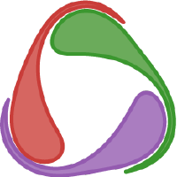
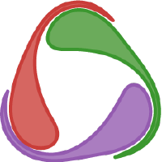

TAMIDS SciML Lab Workshop: Julia Softwares for Scientific Machine Learning
Presenter
- Steven Shao-Ting Chiu (https://stevengogogo.github.io/Resume.io/) — Ph.D. Student, Department of Electrical Engineering
- Advisor: Dr. Ulisses Braga-Neto
Background and Objectives
Julia (https://julialang.org/) is a generic programming language designed for high-performance computing and an open-source project under an MIT license. Julia language is aimed to solve the “two language problem” that typically occurs in scientific computing. Julia is dynamically typed like scripting language such as Python and can be compiled into native machine code. Besides, composablility via multiple dispatch makes Julia works well on the integration across packages. SciML (https://sciml.ai/) is open-source software for scientific machine learning based on the Julia language that combines machine learning and scientific computing by integrating numerous standalone packages.
This worhshop aims to introduce the potential of the Scientific Machine Learning field with Julia programming language. First, we will give an introductory overview about the Julia programming language, and explore Julia SciML ecosystem as an example of its application on Scientific Machine Learning.
Both seseeions will include presentaions and hands-on sessions. The prior knowledge to Python is recommended, and participants are encouraged to bring their own laptops.
 

Schedule
| Time | Content |
|---|---|
| 25 min | Introduction to the Julia Programming Language |
| 25 min | The Julia SciML Ecosystem |
| 10 min | Break |
| 30 min | Hands-on session with nerual differential equation |
| 30 min | Hands-on session with SciML application |
Biography
Steven Shao-Ting Chiu is currently a Ph.D. student in the Department of Electrical Engineering at Texas A&M University. He holds a Bachelor of Science in Electrical Engineering and a Master of Science in Bioinformatics at National Taiwan University, completed in 2018 and 2021 separately. In 2021, he was an intern at Pumas-AI, Inc., and implemented Scientific Machine Learning tools for the application of pharmaceutics and personalized medicine.
Advertisement
add two sentences about applications and actually will be down (objectives)
How to use SciML
Participants are encouraged to bring their own laptop
julia installation
a short session about how to install julia (recommended)
- where to downlaod
- how to install libraries
- run on their own computers
hands-on
- make sure its possible to run on CPU
- make sure audience to isntall julia
check the code is runnable
- advertising first
registration
- when the workshop closes, we can send emails to all audience
prior knowlege to Python is recommended.
Check the colab
write installation for local laptop
Tips for presentation
- Practice for 15min
- Pace myself
- Prepare for the questions
- Don’t put too much information
- Like teaching a class
- Interuption is anticipated
- Like a teaching a class, not like conference
- Pay more time on the difficult part
- Workshop: the question will come in the middle
- Encourage audience to put questions in the middle